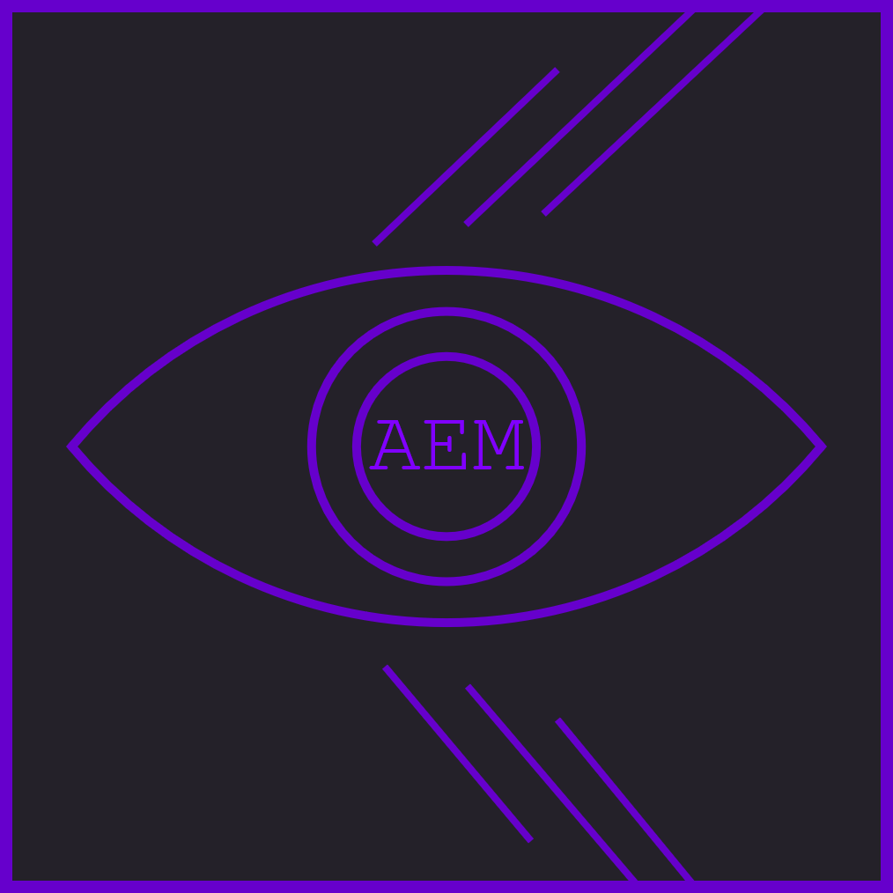

<!-- Wrapper -->
<div class="wrapper">

  <!-- Sidebar -->
  <nav class="sidebar" [class.active]="isSideNavOpen">

    <!-- close sidebar menu -->
    <div class="dismiss" (click)="onSideNavClose()" id="close-menu-btn">
      <i class="fa fa-arrow-left"></i>
    </div>

    <div class="logo">
      
    </div>

    <ul class="list-unstyled menu-elements">
      <li>
        <a class="nav-link nav-item"
           routerLinkActive="active nav-item-active"
           [routerLinkActiveOptions]="{exact: true}"
           routerLink=""
           id="nav-home"><i class="fa fa-line-chart"></i> Metrics</a>
      </li>
      <li>
        <a class="nav-link nav-item"
           routerLinkActive="active nav-item-active"
           [routerLink]="['comparison']"
           id="nav-comparison"><i class="fa fa-area-chart "></i> Comparison</a>
      </li>
      <li>
        <a class="nav-link nav-item"
           routerLinkActive="active nav-item-active"
           [routerLink]="['distribution']"
           id="nav-distribution"><i class="fa fa-bar-chart-o"></i> Distribution</a>
      </li>
    </ul>
  </nav>
  <!-- End sidebar -->

  <!-- Dark overlay -->
  <div class="overlay" (click)="onSideNavClose()" [class.active]="isSideNavOpen"></div>

  <div class="navbar-top">
    <button type="button" class="btn-nav-custom" (click)="onSideNavOpen()" id="menu-btn">
      <i class="fa fa-align-left"></i>Menu
    </button>
  </div>
  <!-- Content -->
  <div class="component-holder">
    <router-outlet></router-outlet>
  </div>
  <!-- End content -->
<!--  <app-scroll-to-top></app-scroll-to-top>-->
</div>
